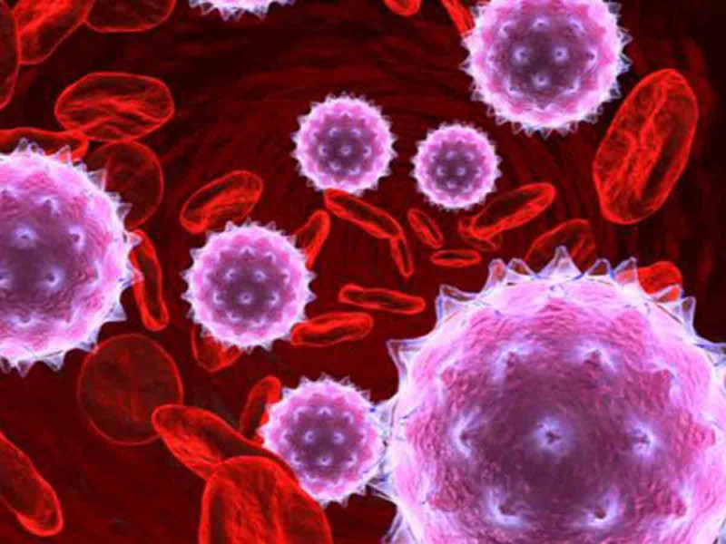

Bacterias patógenas: Entre las bacterias patógenas más conocidas se encuentran:
Escherichia coli (E. coli): Algunas cepas de E. coli pueden causar enfermedades gastrointestinales, como la intoxicación alimentaria.
Salmonella: Provoca la salmonelosis, una infección gastrointestinal transmitida por alimentos contaminados.
Staphylococcus aureus: Puede causar infecciones en la piel, como el impétigo, o infecciones más graves, como neumonía o infecciones de heridas.
Streptococcus pyogenes: Causante de infecciones de garganta (faringitis estreptocócica) y otras infecciones, como la fascitis necrosante.
Virus patógenos: Los virus son responsables de diversas enfermedades infecciosas:
Influenza: El virus de la gripe puede causar infecciones respiratorias graves y epidemias estacionales.
VIH (Virus de Inmunodeficiencia Humana): Provoca el SIDA (Síndrome de Inmunodeficiencia Adquirida), una enfermedad crónica que debilita el sistema inmunológico.

Dengue: Transmitido por mosquitos, el virus del dengue puede causar fiebre alta, dolor muscular y en casos graves, hemorragias.
SARS-CoV-2: El virus responsable de la pandemia de COVID-19, una enfermedad respiratoria que puede causar síntomas leves a graves y complicaciones en algunos casos.

Hongos patógenos: Algunos hongos pueden causar infecciones en humanos:
Candida albicans: Es una levadura que puede causar infecciones por hongos en la piel, boca y órganos genitales.
Aspergillus: Puede causar infecciones pulmonares, especialmente en personas con sistemas inmunológicos debilitados.
Cryptococcus neoformans: Es un hongo que puede infectar los pulmones y el sistema nervioso central, especialmente en personas con sistemas inmunológicos comprometidos.
Protozoos patógenos: Algunos protozoos pueden causar enfermedades:
Plasmodium: Causante de la malaria, una enfermedad transmitida por mosquitos y que afecta a millones de personas en áreas tropicales y subtropicales.

Entamoeba histolytica: Provoca la amebiasis, una infección intestinal que puede causar diarrea grave y complicaciones en el hígado.
Toxoplasma gondii: Este protozoo puede causar toxoplasmosis, una enfermedad generalmente leve en personas sanas, pero que puede ser peligrosa para mujeres embarazadas y personas con sistemas inmunológicos debilitados.
Estos son solo algunos ejemplos de patógenos microbianos. Existen muchos otros microorganismos patógenos que pueden causar enfermedades en humanos y otros organismos.